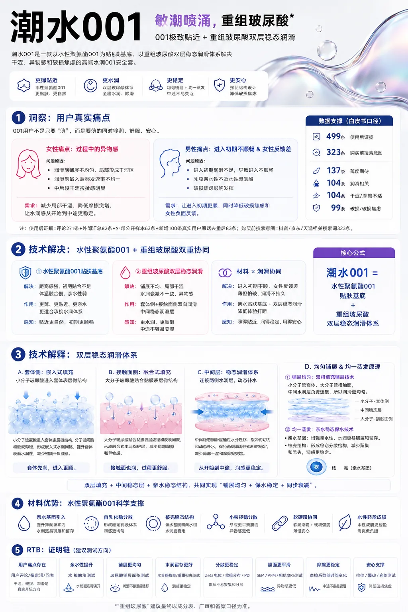
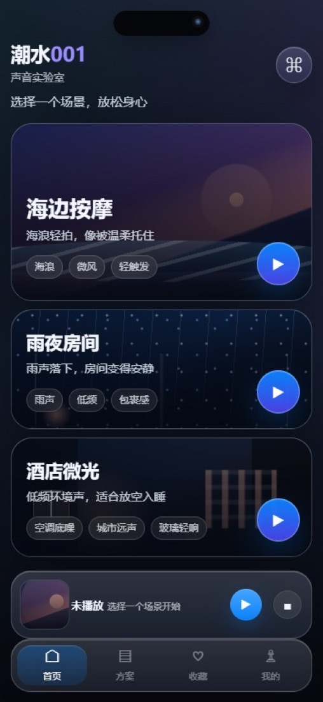
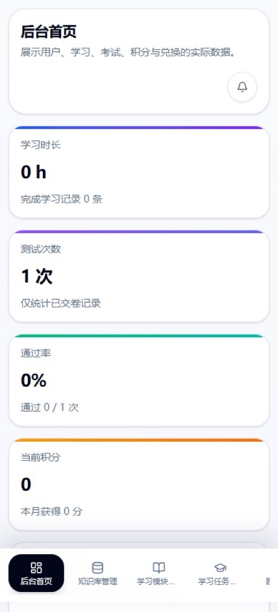
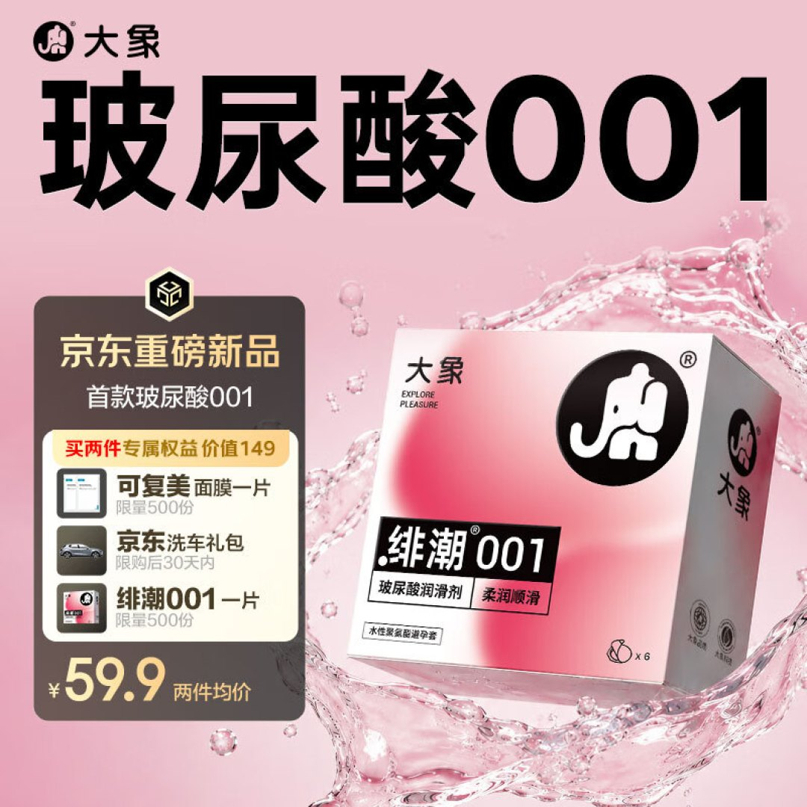
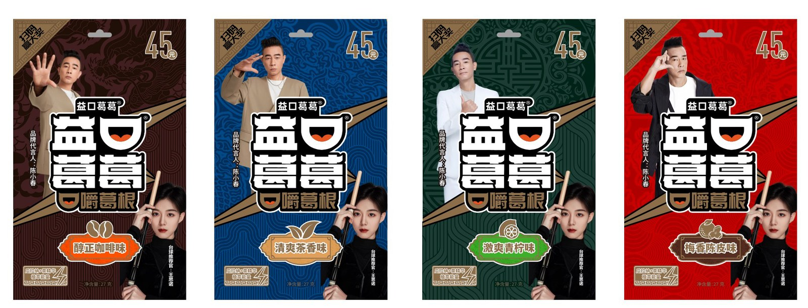
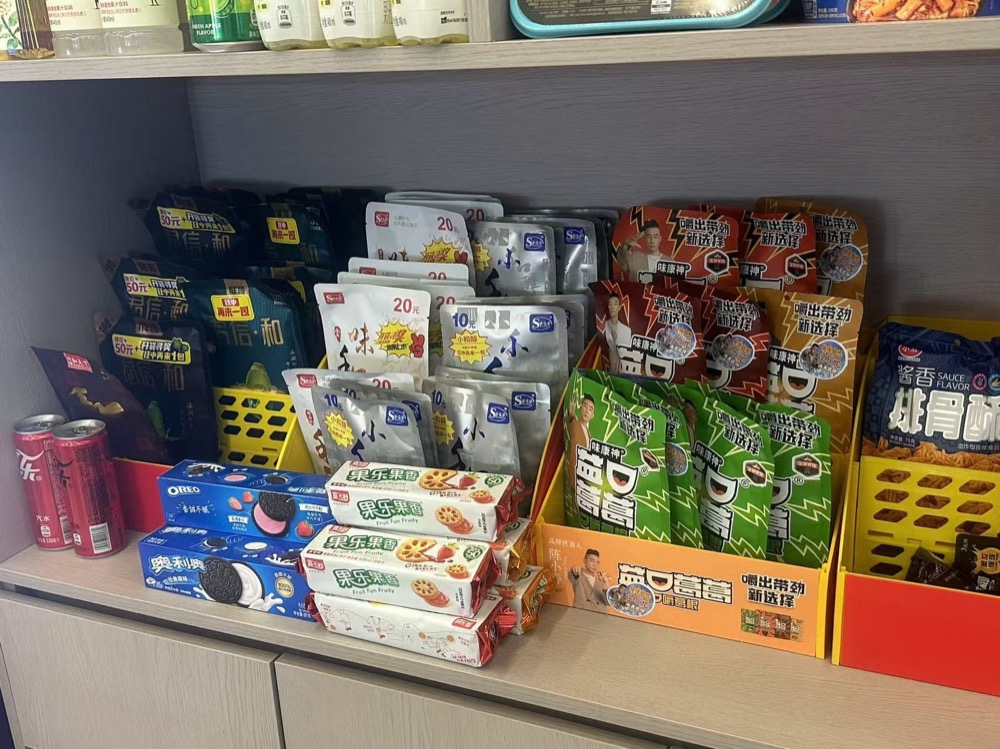
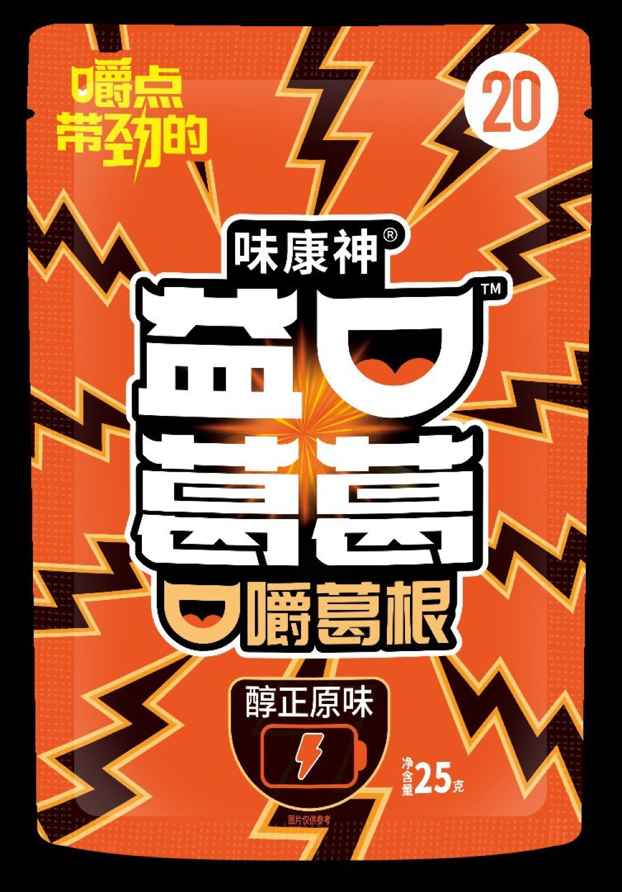

PROJECT NOTES / 01免费搜索增量归因品牌营销上下文（marketing-context） / 品牌 / 数据源位置
免费搜索增量归因
哪些搜索变化可归因于内容，哪些只能描述相关性？
查看问题与做法 ↗何坚松 / NELSON HO
GTM ＋ AI 玩具
消费品、大健康与品牌商业化经历。
工作覆盖产品规划、新品上市、
渠道拓展，以及 AI 工具与研究。
仲恺农业工程学院
动物科学 · 本科
2017 年起
消费品与品牌经营
普通话 / 粤语
英语工作沟通¹
¹ 语言为现有简历自述；职位与项目状态见事实核对表。
大象科技集团 · 北京
2025.11 — 至今 现有简历口径
围绕消费者需求，组织定位、卖点、定价与上市协同。连接研发、供应链、品牌和渠道，推进产品资料与上市准备。
产品屋 / 上市资料 / 现场摄影 / 软件原型
团队、SKU 优化、利润变化、App DAU 与量产状态存在待核口径；本预览不填入结果数字。
深圳市味康嘉品健康科技 · 深圳
2022.05 — 2025.11
围绕加班、熬夜等使用场景组织新品类定位，推进产品、包装与品牌表达，并协同渠道进入和终端推广。
产品家族 / 包装迭代 / 电商货架 / 线下终端
销售、经销商与终端数量口径未统一，暂不展示。与「高和」的公司关系仍待原始工商或任职材料核对。
展开产品、包装与渠道资料 ↗香港科朗集团 — 中科食品 · 香港
2017.07 — 2022.04
参与香港市场的品牌本地化工作，将供应链、产品表达与零售触点接起来。
泰安品牌历史媒体资料 / 任职经历自述
「科朗／柯朗」及公司关系待任职文件核实。营收、币种、周期与个人贡献不采用冲突数字。
查看品牌资料与素材缺口 ↗业务、工具与研究，各自标明状态。
看要解决的问题、做过的动作，
以及当前实际留下的材料。
哪些搜索变化可归因于内容，哪些只能描述相关性？
查看问题与做法 ↗
真实资料 / 历史版本如何把产品定位转成上市动作和现场体验？
查看问题与做法 ↗
真实资料 / 历史版本产品之外，声音服务能否承接场景体验？
查看问题与做法 ↗
真实资料 / 历史版本如何把产品知识变成可学习、可测试的内容？
查看问题与做法 ↗如何连接新品开发、商品经营与洞察资料？
查看问题与做法 ↗达人、合作和交付状态如何统一管理？
查看问题与做法 ↗如何比较 B 站与小红书内容植入和用户反馈？
查看问题与做法 ↗如何评估内容可检索性和服务商交付？
查看问题与做法 ↗如何把部门动作、衡量指标和经营目标接起来？
查看问题与做法 ↗如何持续收集并复用竞品信息？
查看问题与做法 ↗如何把分散行业资料变成可检索证据？
查看问题与做法 ↗如何避免项目资料散落和版本混淆？
查看问题与做法 ↗如何从真实评价中识别需求？
查看问题与做法 ↗原 14 项中最后一项的名称是什么？
查看问题与做法 ↗12 个具名项目＋消费者评价收集待补＋原第 14 项名称待核。资料不足的卡片保留缺口，不以其他项目替代。
CONTACT / 联系方式
产品市场 · 产品企划 · GTM · 品牌孵化 · 商业化
即使交互脚本不可用，也可在此展开阅读。
品牌营销上下文（marketing-context） / 品牌 / 数据源位置
独立成果图待补。此处不使用其他项目的画面。
产品屋原稿使用“潮水001”工作名；与最终“绯潮001”的命名、规格和版本关系待核，不据此认定原稿参数全部适用于上市品。

产品 AI 工作台 / 快速开始 / 能力地图
独立成果图待补。此处不使用其他项目的画面。
种草管理系统 V1.0｜管理端本地基础版 / 本机运行 / M3 使用顺序
独立成果图待补。此处不使用其他项目的画面。
双平台种草复盘 / 植入与内容分析 / 指标口径与待核项
独立成果图待补。此处不使用其他项目的画面。
平台机制与内容研究 / 方法边界 / 供应商验收资料
独立成果图待补。此处不使用其他项目的画面。
市场部复盘的不是营销链路，而是业务增长链路 / 两个最终产品（B） / 与原有拆解的关系
独立成果图待补。此处不使用其他项目的画面。
行业竞品情报收集工具 / 项目结构 / 默认机制
独立成果图待补。此处不使用其他项目的画面。
消费者与市场信息收集 / 本次更新 / 目录
独立成果图待补。此处不使用其他项目的画面。
主库与审定材料分区 / 自动化落盘 / 索引与状态
独立成果图待补。此处不使用其他项目的画面。
独立成果待补
独立成果图待补。此处不使用其他项目的画面。
原清单待补
独立成果图待补。此处不使用其他项目的画面。
HARDWARE / APP / AI
硬件结构和 App 功能不能混写为已经量产的 AI 成果。现有简历能支持规划与调研自述，已取得大象官网公开器具系列展示图；四个商品链接与图中型号的逐一对应关系、AI 功能状态及工程拆解图仍待核。
选品、产品定义与供应商评估。真实结构图、BOM 和各型号状态待补。
需求与功能规划。DAU、线上版本和硬件连接能力待核。
场景、供应商和小样本验证。不能用效果图代表功能已上线。
真实 WebGL 深度交互，展示资料分层。不是器具内部工程模型。
POSITIONING → PRODUCT → CHANNEL
围绕使用场景做产品与口味组合，组织包装表达，再进入电商货架、线下陈列与渠道传播。



销售、渠道规模、终端数量及与高和的关系尚未统一核实，不在本页宣称具体数字。
HONG KONG / BRAND ARCHIVE
现有材料可支持供应链、产品组合、连锁零售、电商与内容营销的经历介绍。公司关系、营收与个人贡献边界尚待原始文件。